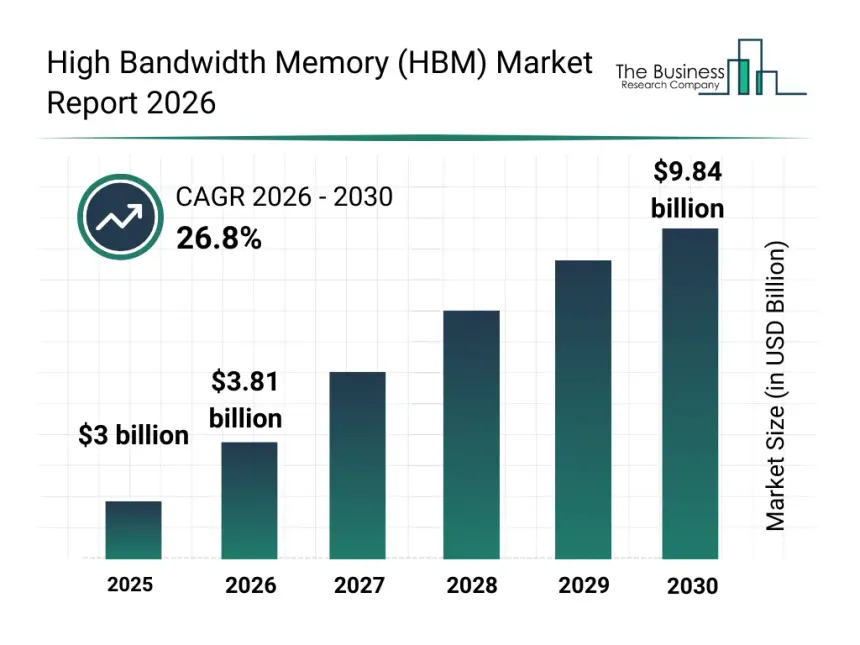

Why are some companies involved in the shortage (how do they benefit)?
SK Hynix, Samsung, and Micron are making huge money from the AI memory short. SK Hynix hit $44B in profit at a 72% margin. Samsung's chip unit made $36B in Q1 2026 94% of all company profit. Micron's revenue jumped to $41.5B with margins going from 36% to 56%. Nvidia is both the biggest winner and a victim. On the win side, AI demand is printing money: Q2 FY2027 revenue hit $96.2B with $59.7B in profit. On the lose side, HBM now makes up 30 to 40% of their AI chip cost (up from under 20% two generations ago), and HBM4 costs 80% more than the prior gen. Nvidia's CFO called it "extreme pricing conditions in memory" and said costs are "headed even higher." They've already raised AI server prices 15 to 17%, passing the hit to Microsoft, Alphabet, and Oracle. The cost also lands on Dell, HP, Lenovo, Sony, and others who either raise prices or eat the hit.


| Component | AI impact | Consumer Effects |
|---|---|---|
| GPUs | Massive demand for AI training and inference workloads in data centres | Higher gaming GPU prices and occasional shortages |
| DRAM memory | Data centres purchase large volumes of high-speed memory for AI clusters | Rising prices for consumer RAM kits |
| NAND storage (SSDs) | Enterprise SSDs prioritized for storing and processing AI datasets | Increased prices for consumer SSDs |
What is the shortage even about?
The shortage is for DRAM (RAM — DDR4/DDR5) and NAND flash (SSDs). These are the same chips in every PC, phone, and laptop. They're short because SK Hynix, Samsung, and Micron shifted 93% of their wafer capacity to HBM (stacked memory for AI chips). HBM uses 4 times the wafer area of regular DRAM per gigabyte and pays 2 to 5 times more, so it makes no financial sense to make consumer RAM when AI data centers are paying top dollar. This makes us,the consumer suffer as components become scarse and companies raise prices.
This has affected millions of people and will affect more the best we can do is wait.